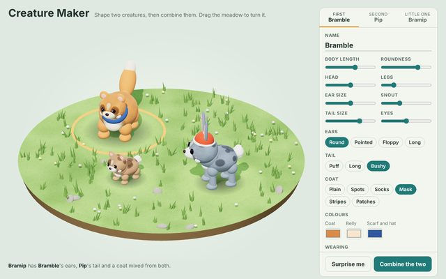

I build systems that take the manual work out of the day.
Systems analyst in West Michigan. I run business platforms, move their data, and automate the work around them with Python, PowerShell, SQL, and Power Automate. On my own time I build games and tools with the help of AI.
Automation, analytics, and dashboards
Tools that take a manual process and make it run on its own, and the data work behind them.
See business projects →


24 browser games and a 3D tool
Management sims, roguelites, puzzles, and a procedural 3D creature maker. Built with the help of AI, all playable in the browser.
See personal projects →What I work with
Automation and scripting
Python, PowerShell, Power Automate, Office Scripts, VBA. I use AI-assisted development and test against real data.
Data
SQL (Oracle, SQLite), data migration and reconciliation, Power BI, Excel.
Games and graphics
JavaScript and HTML canvas, three.js, Godot 4. Simulation design and procedural generation.
Contact
I'm open to systems analyst, automation, and CRM roles in West Michigan or remote.